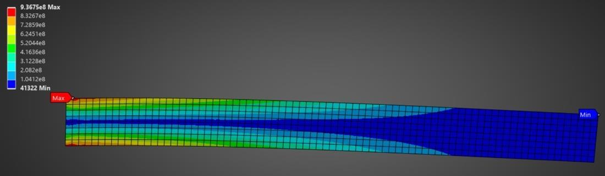
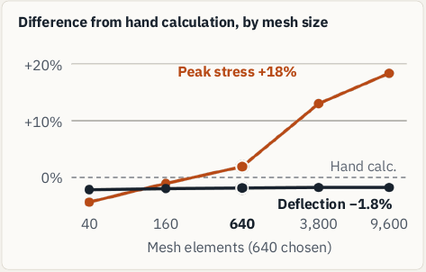

Simulate a thin titanium cantilever (800 x 75 x 1 mm) under a point load using Ansys Mechanical

Specifications
- Simulate a thin titanium cantilever (800 x 75 x 1 mm) under a point load using Ansys Mechanical
- Find a mesh that balances accuracy and solve time, then validate
Contributions
- Ran five 2D meshes, 40 to 9,600 plane-stress elements, logging stress, deflection and solve time.
- Found peak stress kept rising with refinement: a singularity at the fixed support.
- Validated the 640-element mesh: deflection within 2% of beam theory in both load cases.
Outcomes & Lessons Learnt
- Gained a physical understanding of mesh convergence behavior, including appropriate distinction between stress- and displacement-based measures
- Should have made more cautious conclusions regarding model validation, particularly when referring to stress-based quantities
